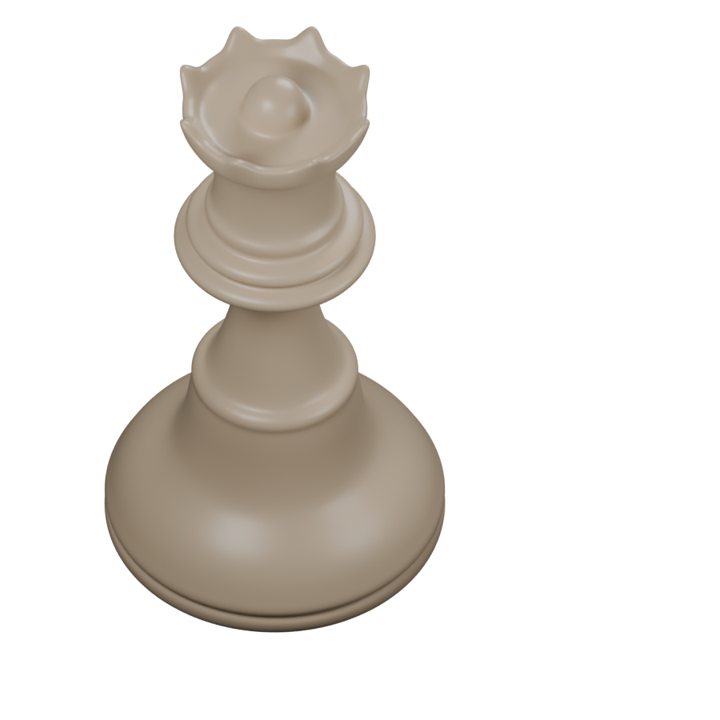
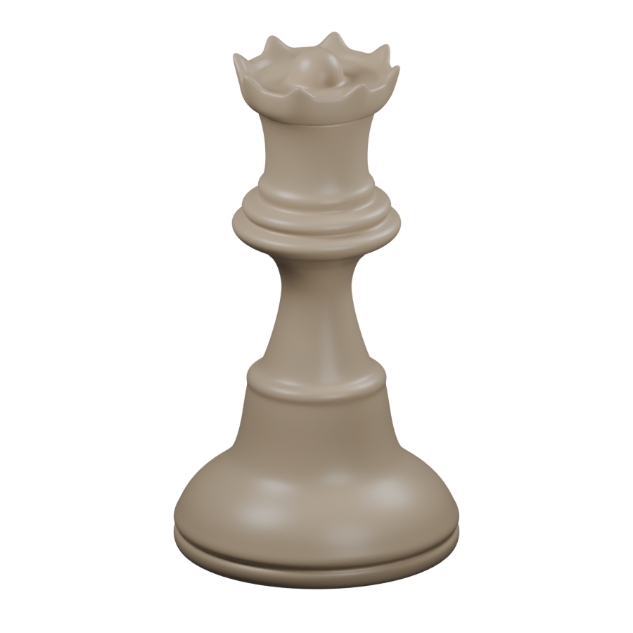

Staunton queen · geometry study
Revised geometry: a wider, flatter base with one groove, a raised stem connection, and a shallow crown with an egg-shaped center partly submerged in its surface. The plain clay material is for evaluating shape; wood grain comes after geometry review.
Original · white Reconstruction · matched view
Reconstruction · matched view
Original · black
Camera and framing are estimated from the supplied images. Eight crown points and the turned profiles are reconstructed interpretations. The originals include cast shadows; the clay render uses a transparent background without a ground shadow.
Reconstruction · lower three-quarter view
Editable Blender model · Rebuild script